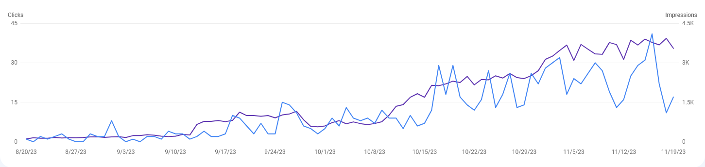

Osnovni podaci
- Pol: Muški
- Mesto: Nova Pazova
- Godine: 33
Stvari koje gotivim
- Omiljeni filmovi
- Omiljene serije
-
Omiljene igrice
- Company of Heroes
- Generals
- Tiberian Sun
- Warcraft
- Age of Empires
- Red Alert
-
Omiljeni citat
“The best way to predict the future is to create it.”
—Abraham Lincoln
Zanimanje
Poslednjih nekoliko godina radim kao Digital Marketing Specialist u startapima.
Od svih kanala marketinga najviše sam se specijalizovao za Search Engine Optimization.
Trenutno pomažem jednoj marketinškoj agenciji da ove linije idu na gore :)
Hobi
Moj najlepši hobi od skoro je da budem ujak ovom malom čupku